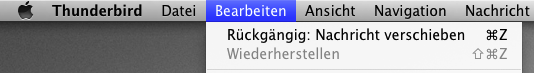
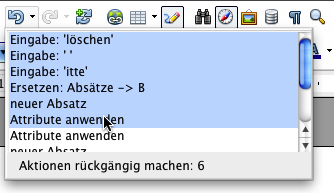
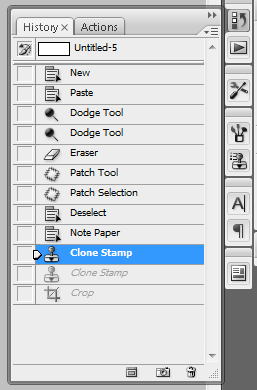

| Usability Pattern | Globales Undo |
|---|---|
| Problem | Benutzer möchten Aktionen rückgängig machen, die sie versehentlich oder irrtümlich ausgeführt haben oder deren Resultate nicht ihren Erwartungen entsprechen. |
| Lösung |
Erlaube Benutzern, ausgeführte Aktionen rückgängig zu machen und den vorigen Zustand des Systems wiederherzustellen. Lasse Benutzern dabei die Wahl, nur die zuletzt ausgeführte Aktion oder mehrere ausgeführte Aktionen auf einmal rückgängig zu machen. Verwende dabei eine einzige Historie für alle ausgeführten Aktionen. Verwende eine einheitliche, für die Benutzer nachvollziehbare Undo-Strategie. Aktionen, die dauerhafte Änderungen an Daten bewirken können (z.B. das Hinzufügen, Ändern oder Löschen von Datensätzen), sollten rückgängig gemacht werden können. Bei Aktionen, die lediglich die Darstellung verändern (z.B. das Vergrößern oder Verkleinern der Ansicht), ist dies zumeist nicht nötig. Aktionen, die aus technischen oder konzeptuellen Gründen nicht rückgängig gemacht werden können (z.B. das Ausdrucken eines Dokuments oder das Verschicken einer E-Mail), sollten für die Benutzer erkennbar sein. In manchen Fällen ist eine Warnung vor Ausführung der Aktion empfehlenswert. Biete Benutzern ebenfalls die Möglichkeit, rückgängig gemachte Aktionen wiederherzustellen , also ein vorheriges Undo zurückzunehmen, wenn keine zwischenzeitlich durchgeführte Aktion dies unmöglich macht. Diese Möglichkeit wird als Redo bezeichnet. Redo ist dabei nicht zu verwechseln mit der Wiederholung einer neu ausgeführten Aktion. |
| Illustration | In einem Textverarbeitungsprogramm löscht ein Benutzer einen vorhandenen Wert und gibt anschließend einen neuen Begriff ein. Mit dem Resultat unzufrieden möchte er den ursprünglichen Text wiederherstellen. Er führt die Aktion Undo für die beiden zuletzt ausgeführten Aktionen (Löschen des ursprünglichen Begriffs, dann Eingabe des neuen Begriffs) aus, um den ursprünglichen Text wiederherzustellen. |
| Beispiele |
Mozilla Thunderbird 3.1 Das E-Mail-Programm Thunderbird erlaubt Benutzern in vielen Fällen, die zuletzt ausgeführte Aktion rückgängig zu machen.  Undo-Funktion in Thunderbird OpenOffice.org Writer 3.2 Das Textverarbeitungsprogramm Writer bietet Benutzern die Möglichkeit, mehrere ausgeführte Aktionen auf einmal rückgängig zu machen. Die ausgeführten Aktionen werden dazu als Ausklappmenü in Listenform angezeigt; der Benutzer wählt aus, bis zu welcher Aktion das Programm zurückgehen soll (Undo). In gleicher Weise können zurückgenommene Aktionen wiederhergestellt werden (Redo).  Historie ausgeführter Aktionen in OpenOffice Adobe Photoshop Im Bildbearbeitungsprogramm Photoshop können Benutzer eine Historie der zuletzt ausgeführten Aktionen einblenden. Innerhalb der Historie können Benutzer Aktionen rückgängig machen (Undo) und auch, wenn zwischenzeitlich keine anderen Aktionen ausgeführt wurden, erneut ausführen (Redo). Der aktuelle Bearbeitungsstand wird in der Historie markiert (im Bild blau hervorgehoben), vorherige und nachfolgende Aktionen sind aufgeführt.  Historie ausgeführter Aktionen in Photoshop |
| Nutzungskontext |
|
| Begründung |
Die Möglichkeit, Aktionen rückgängig zu machen, nimmt Benutzern die Furcht vor einer Fehlbedienung des Systems und ermutigt sie, die vom System angebotenen Aktionen ausprobieren (explorative Nutzung). Das Wissen darum, das Fehler nicht dauerhaft sind, sondern per Undo einfach korrigiert werden können, lässt Benutzer entspannter und zufriedener arbeiten. Die schnelle Fehlerkorrektur per Undo erhöht zudem die Benutzungseffizienz. |
| Risiken, Nachteile, Kosten | Wenn allgemein eine Undo-Möglichkeit angeboten wird, müssen Ausnahmen (nicht-reversible Aktionen) für Benutzer klar erkennbar und nachvollziehbar sein. Andernfalls erscheint das System für Benutzer inkonsistent; zudem besteht die Gefahr frustrierender, da nicht rückgängig zu machender Fehler. Eine Warnung vor der Ausführung einer irreversiblen Aktion bietet hier ggf. zusätzlichen Schutz. |
| Zusammenspiel |
Alternative Objektbezogenes Undo Alternativ zur globalen Undo-Möglichkeit kann auch ein objektbezogenes Undo angeboten werden, bei dem Aktionen für jedes Objekt (z. B. jeden fachlichen Datensatz) individuell rückgängig gemacht werden können. In diesem Fall wird für jedes Objekt eine separate Undo-Historie geführt. Abhängigkeit Warnung In nahezu allen Systemen können Benutzer Aktionen ausführen, die aus technischen oder konzeptuellen Gründen nicht rückgängig gemacht werden können. Benutzer sollten darauf durch eine entsprechende Warnung explizit hingewiesen werden, damit sie nicht irrtümlich davon ausgehen, auch diese Aktionen per Undo zurücknehmen zu kömmen. |
| Anforderungserhebung |
Identifiziere Aktionen, die rückgängig gemacht werden können.
|
| Anforderungsspezifikation |
Spezifiziere globale Vorgaben für den Einsatz des Usability Patterns „ Globales Undo “:
Spezifiziere, für welche Interaktionen das Usability Pattern „ Globales Undo “ eingesetzt wird. Annotiere und ergänze dazu vorhandene Use Cases :
|
{kind=link}
{kind=link}
{kind=link}